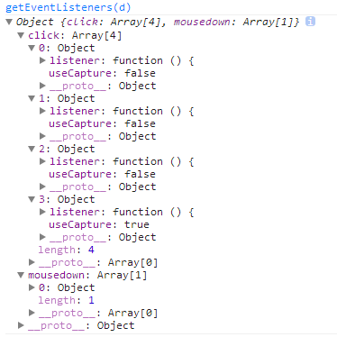

前言
前端时间我写过几篇关于事件的博客：
结果被团队的狗蛋读了，发现其中一块”特别“的地方，然后之后读了Barret Lee 的一篇博客：[解惑]JavaScript事件机制
发现该博主之前对这个问题可能也有一定”误解“
之后再陆陆续续问了团队中几个高手，狗蛋的问题都得不到解释，而且很多比较资深的前端对这个问题的认识也是有问题的
所以，这里就拿出来说说，各位看看就好
事件阶段
引用：
群里童鞋问到关于事件传播的一个问题：“事件捕获的时候，阻止冒泡，事件到达目标之后，还会冒泡吗？”。
初学 JS 的童鞋经常会有诸多疑问，我在很多 QQ 群也混了好几年了，耳濡目染也也收获了不少，以后会总结下问题的结论，顺便说说相关知识的扩展~
如果贸然回答还会冒泡，这不太好的，稍微严谨点考虑 0级 DOM 事件模型的话，这个答案是否定的。但是在 2级 DOM 事件模型中，答案是肯定的，这个问题值得探讨记录下。
本文地址：http://www.cnblogs.com/hustskyking/p/problem-javascript-event.html
三个阶段
事件冒泡即由最具体的元素（文档嵌套最深节点）接收，然后逐步上传至document
事件捕获会由最先接收到事件的元素然后传向最里边（我们可以将元素想象成一个盒子装一个盒子，而不是一个积木堆积）
这句话其实解释的很清楚了，事件的触发点应该是最先接收到事件的元素或者最具体的元素
DOM2级事件规定事件包括三个阶段：
① 事件捕获阶段
② 处于目标阶段
③ 事件冒泡阶段
一切都很美好，比如以下代码很多人会自以为是的认为先执行捕获，再执行冒泡：
<html xmlns="http://www.w3.org/1999/xhtml"> <head> <title></title> <style type="text/css"> #p { width: 300px; height: 300px; padding: 10px; border: 1px solid black; } #c { width: 200px; height: 200px; border: 1px solid red; } #sub { width: 100px; height: 100px; border: 1px solid red; } </style> </head> <body> <div id="p"> parent </div> <script type="text/javascript"> window.alert = function (msg) { console.log(msg); }; var p = document.getElementById('p'); p.addEventListener('click', function (e) { alert('父节点捕获11') }, true); p.addEventListener('click', function (e) { alert('父节点冒泡') }, false); </script> </body> </html>
事实上，我们忽略了一个重要的事实，发生在p元素的点击时是先判断是否处于事件阶段二！！！
比如，我们这里点击时候
这个时候，我们已经处于了事件阶段，所以根本不存在捕获或者冒泡
这个时候会按照事件注册顺序，由事件队列中取出回调函数，执行之！
这个是一个比较容易忽略的地方，安装我们临时的理解，很容易忽略处于阶段，而只关注捕获阶段以及冒泡阶段，事实上处于阶段时候的处理机制是不一样的
两个嵌套
为了论证上面的说明，我们分别下下下面的代码：
<html xmlns="http://www.w3.org/1999/xhtml"> <head> <title></title> <style type="text/css"> #p { width: 300px; height: 300px; padding: 10px; border: 1px solid black; } #c { width: 200px; height: 200px; border: 1px solid red; } #sub { width: 100px; height: 100px; border: 1px solid red; } </style> </head> <body> <div id="p"> parent <div id="c"> child </div> </div> <script type="text/javascript"> window.alert = function (msg) { console.log(msg); }; var p = document.getElementById('p'), c = document.getElementById('c'); p.addEventListener('click', function (e) { alert('父节点冒泡') }, false); c.addEventListener('click', function (e) { alert('子节点捕获') }, true); c.addEventListener('click', function (e) { alert('子节点冒泡') }, false); p.addEventListener('click', function (e) { alert('父节点捕获') }, true); </script> </body> </html>
这个时候，我们点击子div时候发生了以下事情
① 判断e.target == e.currentTarget，发现不相等
② 根据相关判断，发现处于捕获阶段（具体逻辑我们后面来）
③ 触发捕获阶段的各个事件
④ 进入处于阶段，将此刻的事件队列中的函数执行之
⑤ 进入冒泡阶段......
比如稍作修改，上面的代码输出将会不一样：
p.addEventListener('click', function (e) {
alert('父节点冒泡')
}, false);
c.addEventListener('click', function (e) {
alert('子节点冒泡')
}, false);
c.addEventListener('click', function (e) {
alert('子节点捕获')
}, true);
p.addEventListener('click', function (e) {
alert('父节点捕获')
}, true);
三层嵌套
根据以上理解，我们很容易就可以说出下述代码的输出


<html xmlns="http://www.w3.org/1999/xhtml"> <head> <title></title> <style type="text/css"> #p { width: 300px; height: 300px; padding: 10px; border: 1px solid black; } #c { width: 200px; height: 200px; border: 1px solid red; } #sub { width: 100px; height: 100px; border: 1px solid red; } </style> </head> <body> <div id="p"> parent <div id="c"> child <div id="sub"> sub </div> </div> </div> <script type="text/javascript"> window.alert = function (msg) { console.log(msg); }; var p = document.getElementById('p'), c = document.getElementById('c'), sub = document.getElementById('sub'); sub.addEventListener('click', function (e) { alert('sub节点冒泡') }, false); sub.addEventListener('click', function (e) { alert('sub节点捕获') }, true); p.addEventListener('click', function (e) { alert('父节点捕获11') }, true); p.addEventListener('click', function (e) { alert('父节点冒泡') }, false); c.addEventListener('click', function (e) { alert('子节点捕获') }, true); c.addEventListener('click', function (e) { alert('子节点冒泡') }, false); p.addEventListener('click', function (e) { alert('父节点捕获') }, true); </script> </body> </html>
模拟javascript事件机制
在此之前，我们来说几个基础知识点
dom唯一标识
在页面上的dom，每个dom都应该有其唯一标识——_zid（我们这里统一为_zid）/sourceIndex，但是多数浏览器可能认为，这个接口并不需要告诉用户所以我们都不能获得
但是IE将这个接口放出来了——sourceIndex
我们这里以百度首页为例：
1 var doms = document.getElementsByTagName('*'); 2 var str = ''; 3 for (var i = 0, len = doms.length; i < len; i++) { 4 str += doms[i].tagName + ': ' + doms[i].sourceIndex + '\n'; 5 }

可以看到，越是上层的_zid越小
其实，dom _zid生成规则应该是以树的正序而来（好像是吧.....），反正是从上到下，从左到右
有了这个后，我们来看看我们如何获得一个dom的注册事件集合
获取dom注册事件集合
比如我们为一个dom同时绑定了2个click事件，又给他绑定一个keydown事件，那么对于这个dom来说他就具有3个事件了
我们有什么办法可以获得一个dom注册的事件呢？？？
答案很遗憾，浏览器都没有放出api，所以我们暂时不能知道一个dom到底被注册了多少事件......
PS：如果您知道这个问题的答案，请留言
有了以上两个知识点，我们就可以开始今天的扯淡了
注意：下文进入猜想时间
补充点
这里通过园友 JexCheng 的提示，其实一些浏览器是提供了获取dom事件节点的方法的
DOM API是没有。不过浏览器提供了一个调试用的接口。
Chrome在console下可以运行下面这个方法：
getEventListeners(node)，
获得对象上绑定的所有事件监听函数。
注意，是在console里面执行getEventListeners方法
1 <html xmlns="http://www.w3.org/1999/xhtml"> 2 <head> 3 <title></title> 4 </head> 5 <body> 6 <div id="d">ddssdsd</div> 7 <script type="text/javascript"> 8 var node = document.getElementsByTagName('*'); 9 var d = document.getElementById('d'); 10 d.addEventListener('click', function () { 11 alert(); 12 }, false); 13 d.addEventListener('click', function () { 14 alert('我是第二次'); 15 }, false); 16 d.onclick = function () { 17 alert('不规范的绑定'); 18 } 19 d.addEventListener('click', function () { 20 alert(); 21 }, true); 22 23 d.addEventListener('mousedown', function () { 24 console.log('mousedown'); 25 }, true); 26 var evets = typeof getEventListeners == 'function' && getEventListeners(d) 27 </script> 28 </body> 29 </html>
以上代码在chrome中的console结果为：

可以看到，无论何种绑定，这里都是可以获取的，而且获取的对象与我们模拟的对象比较接近
事件注册发生的事
首先，我们为dom注册事件的语法是：
1 dom.addEventListener('click', function () { 2 alert('ddd'); 3 })
以上述代码来说，我作为浏览器，以这个代码来说，在注册阶段我便可以保存以下信息：
1 <html xmlns="http://www.w3.org/1999/xhtml"> 2 <head> 3 <title></title> 4 <style type="text/css"> 5 #p { width: 300px; height: 300px; padding: 10px; border: 1px solid black; } 6 #c { width: 100px; height: 100px; border: 1px solid red; } 7 </style> 8 </head> 9 <body> 10 <div id="p"> 11 parent 12 <div id="c"> 13 child 14 </div> 15 </div> 16 <script type="text/javascript"> 17 var p = document.getElementById('p'), 18 c = document.getElementById('c'); 19 c.addEventListener('click', function () { 20 alert('子节点捕获') 21 }, true); 22 23 c.addEventListener('click', function () { 24 alert('子节点冒泡') 25 }, false); 26 27 p.addEventListener('click', function () { 28 alert('父节点捕获') 29 }, true); 30 31 p.addEventListener('click', function () { 32 alert('父节点冒泡') 33 }, false); 34 </script> 35 </body> 36 </html>

这里，我们为parent和child绑定了click事件，所以浏览器可以获得如下队列结构：
/****** 第一步-注册事件 ******/ //页面事件存储在一个队列里 //以_zid排序 var eventQueue = [ { _zid: 'parent', handlers: { click: [ { useCapture: true, listener: fn }, { useCapture: false, listener: fn }, { useCapture: false, listener: fn } ] } }, { _zid:'child', handlers:{ click: [ //...... ] } }, { _zid: '_zid', handlers: { //…… } } ];
就那parent这个div来说，我们为他绑定了两个click事件（我们其实可以绑定3个4个或者更多，所以事件集合是一个数组，执行具有先后顺序）
其中注册事件时候，又会分冒泡和捕获，而且这里以_zid排序（比如：document->body->div#p->div#c）
然后第一个阶段就结束了
PS：我想底层c++语言一定有类似的这个队列，而且可以释放接口，让我们获取一个dom所注册的所有事件
注意，此处队列是这样，但是我们真正点击一个元素，可能就只抽取其中一部分关联的对象组成一个新的队列，供下面使用
初始化事件参数
第二步就是初始化事件参数，我们可以通过addEventListener，创建事件参数，但是我们这里简单模拟即可：
注意，为了方便理解，我们这里暂不考虑mousedown
1 /****** 第二步-初始化事件参数 ******/ 2 var Event = {}; 3 Event.type = 'click'; 4 Event.target = el;//当前手指点击最深dom元素 5 //初始化信息 6 //...... 7 //鼠标位置信息等
在这里比较关键的就是我们一定要好好定义我们的target！！！
于是可以进入我们的关键步骤了，触发事件
触发事件
事件触发分三步走，首先是捕获然后是处于阶段最后是冒泡阶段：
1 var isTarget = false; 2 3 //当前处于的dom标识，根据他可以获取当前所处dom 4 var cur_zid = null; 5 6 //此时，我们已经获得了e.target了，这个一定要注意 7 Event.eventPhase = 1; 8 9 //首先是捕获阶段，事件执行至event.target为止，我们这里只关注click 10 //到event.target时，需要进行特殊处理 11 for (var index = 0, length = eventQueue.lenth; index < length; index++) { 12 13 var obj = eventQueue[index]; 14 cur_zid = obj._zid; 15 16 //如果马上便进入了处于阶段，便不管捕获阶段下面的代码了，否则便执行捕获阶段的事件 17 //执行至target便跳出循环，不再执行下面的操作，/一旦处于阶段便不执行相关事件之间跳出，并跳出捕获阶段，但是记录当前索引值 18 if (Event.target._zid == eventQueue[index]._zid) { 19 Event.eventPhase = 2;//当前阶段 20 isTarget = true; 21 break; 22 } 23 24 //若是当前已经是target便不再向下捕获 25 if(isTarget) break; 26 27 //获取捕获时期该元素的click事件集合，这里需要做一定筛选 28 var clickHandlers = []; 29 for(var k in obj.handlers.click) { 30 if(obj.handlers.click[k].useCapture == false) clickHandlers.push(obj.handlers.click[k].listener); 31 } 32 33 //事件处理程序根据当前zid获取正在处理的那个元素，当然这个方法，此处并未实现 34 Event.currentTarget = getRealDom(cur_zid); 35 for (var i = 0, len = clickHandlers.length; i < len; i++) { 36 //每一次事件执行都可能更改Event的值 37 clickHandlers[i](Event); 38 } 39 40 //如果阻止冒泡，跳出所有循环，不执行后面的事件 41 if (Event.bubbles) { 42 //不在执行之后逻辑直接跳出 43 //return; 44 } 45 } 46 47 //处于事件阶段的相关事件按注册顺序取出，因为前面保留了index，这里直接使用即可 48 //而这里的obj保存的就是处于阶段时候的相关对象，因为前面跳出了...... 49 var cur_clickHandlers = obj.handlers.click; 50 51 //事件处理程序根据当前zid获取正在处理的那个元素，当然这个方法，此处并未实现 52 Event.currentTarget = getRealDom(cur_zid); 53 for (var i = 0, len = cur_clickHandlers.length; i < len; i++) { 54 cur_clickHandlers[i](Event); 55 } 56 57 //如果阻止冒泡，跳出所有循环，不执行后面的事件 58 if (Event.bubbles) { 59 //不在执行之后逻辑直接跳出 60 //return; 61 } 62 63 Event.eventPhase = 3; 64 65 //冒泡阶段 66 for(var index = eventQueue.lenth; index != 0; index--) { 67 68 var obj = eventQueue[index]; 69 cur_zid = obj._zid; 70 71 //如果再次到底处于阶段直接跳出 72 if (Event.target._zid == eventQueue[index]._zid) { 73 return ; 74 } 75 76 //获取冒泡时期该元素的click事件集合，这里需要做一定筛选 77 var clickHandlers = []; 78 for (var k in obj.handlers.click) { 79 if (obj.handlers.click[k].useCapture == true) clickHandlers.push(obj.handlers.click[k].listener); 80 } 81 82 //事件处理程序根据当前zid获取正在处理的那个元素，当然这个方法，此处并未实现 83 Event.currentTarget = getRealDom(cur_zid); 84 for (var i = 0, len = clickHandlers.length; i < len; i++) { 85 //每一次事件执行都可能更改Event的值 86 clickHandlers[i](Event); 87 } 88 89 //如果阻止冒泡，跳出所有循环，不执行后面的事件 90 if (Event.bubbles) { 91 //不在执行之后逻辑直接跳出 92 //return; 93 } 94 }
这个注释写的很清楚了应该能表达清楚我的意思，对上次的想法做了调整
如果您对此有何想法，或者我这么想是错误的，请指出！！！
结语
根据今天狗蛋问的问题，已经结合其它博主的想法，写了这篇博客，希望对您有用，如何文章有误，请不吝指出！